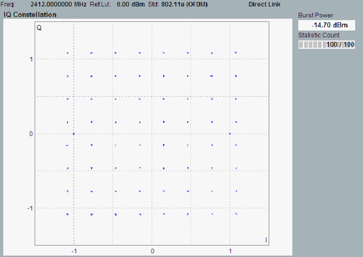

View I/Q Constellation
The I/Q constellation diagram displays the modulation symbols as points in the I/Q plane.

I/Q constellation diagram
The expected results depend on the modulation type. For an ideal QPSK signal, the constellation points are on a circle around the origin, with relative phase angles of 90 deg.
Constellation diagrams give a graphical representation of the signal quality and can help to reveal typical modulation errors causing signal distortions.
See also: "I/Q Constellation Diagram"
For query of the diagram contents via remote control, see:
For additional information, refer to "Common View Elements".